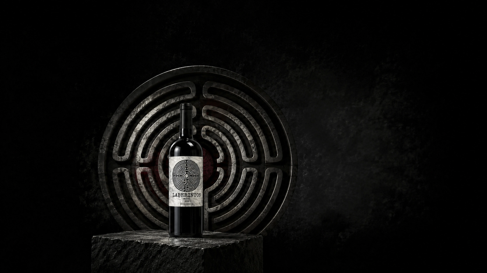
Varietal
Malbec
Tinto Malbec clásico con matices morados, que captura los aromas de ciruelas y frutos rojos acompañados de notas de cerezas.
- Cosecha
- 2024
- Origen
- Ugarteche, Luján de Cuyo
- Altitud
- 950 msnm
- Crianza
- Sin roble
- Alcohol
- 13,4%
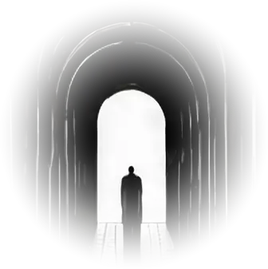
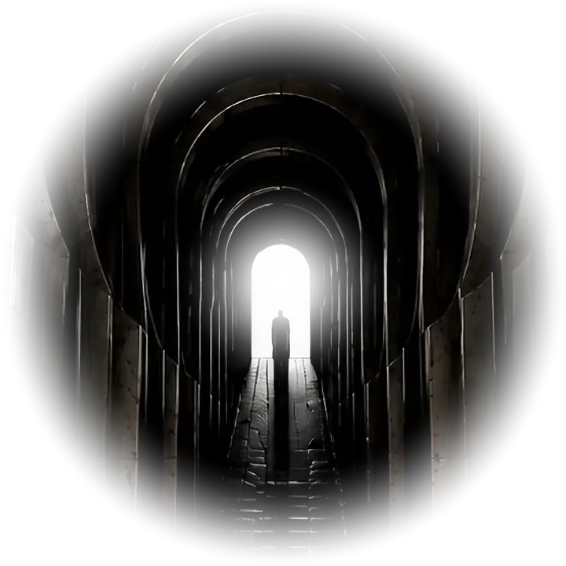
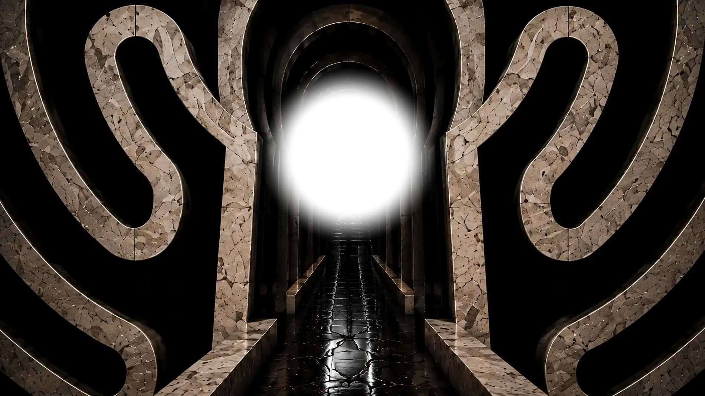
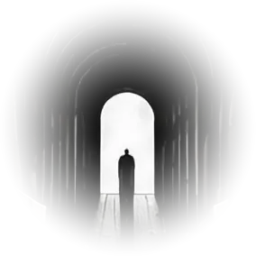
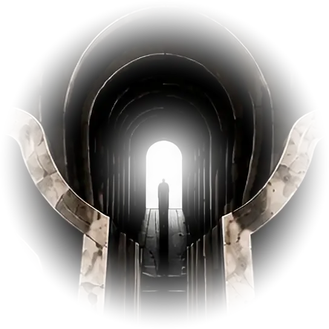
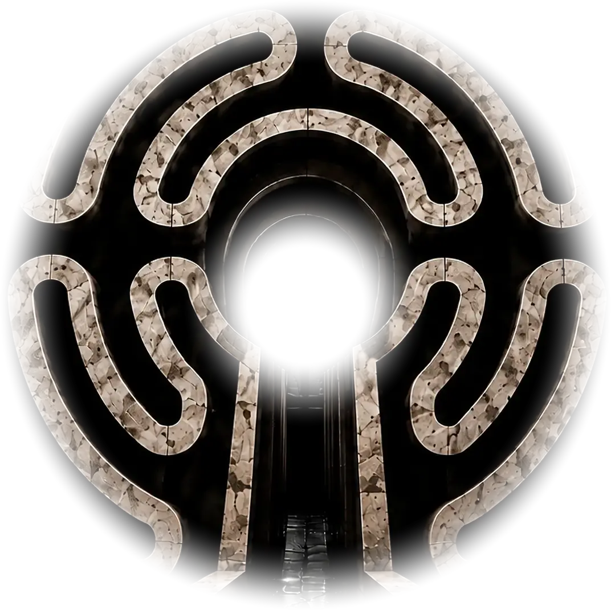
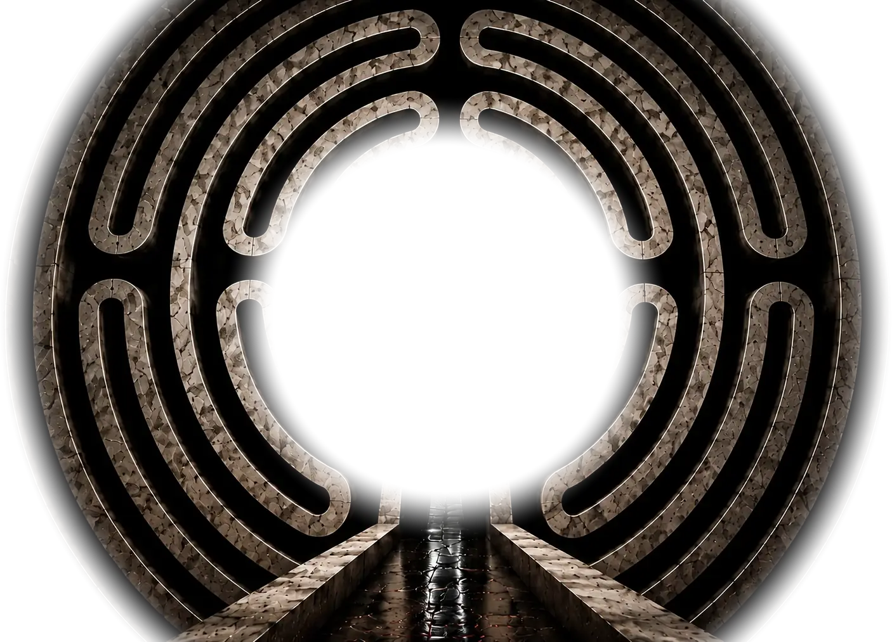
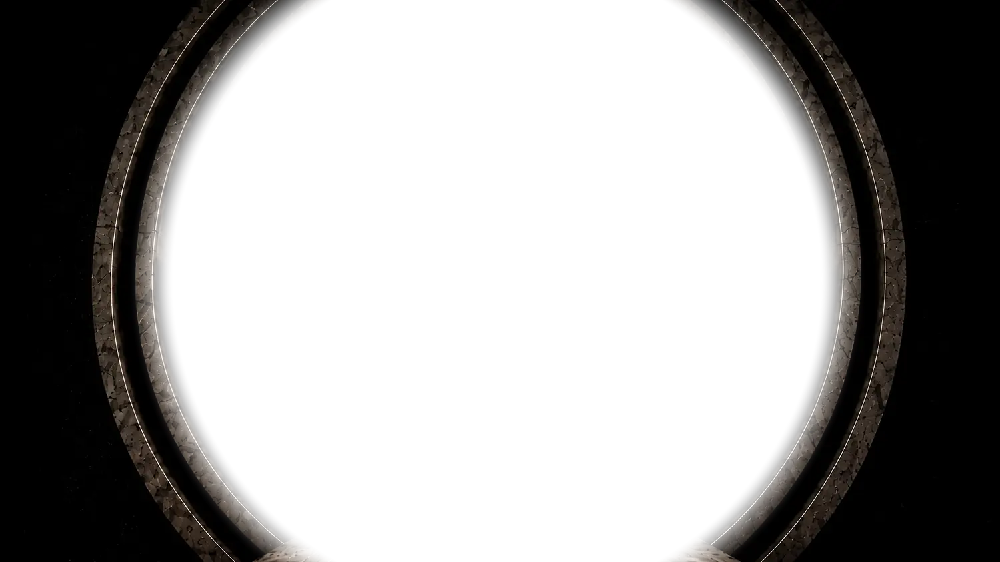
Laberintos · Mendoza, Argentina
Elegí tu camino
Cada etiqueta es un laberinto distinto. El circular de los varietales, el cuadrado del Reserva, el triangular de la edición limitada.

Varietal
Tinto Malbec clásico con matices morados, que captura los aromas de ciruelas y frutos rojos acompañados de notas de cerezas.
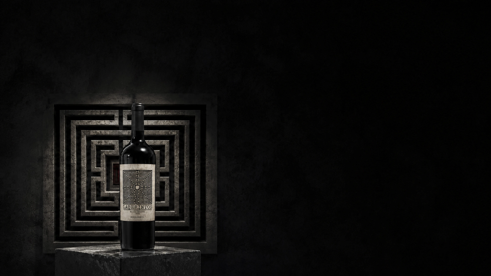
Reserva
Un Malbec con 12 meses en barrica: esa sutil vainilla aportada por la madera le da su estructura sin perder la nota frutal.
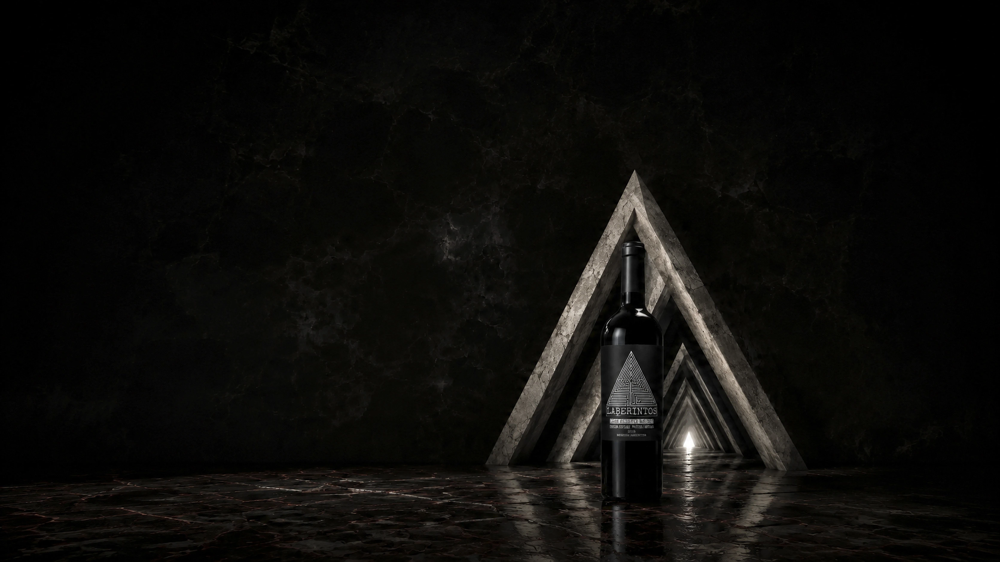
Gran Reserva
Edición especial · partida limitada
Un Malbec con 24 meses de barrica de roble francés, obteniendo así una estructura delicada y elegante de larga persistencia en boca.
Y después
Los tres Malbec vienen de Mendoza. El cuarto no: cruza a San Juan y cambia de variedad. Es el único camino que sale del mapa.
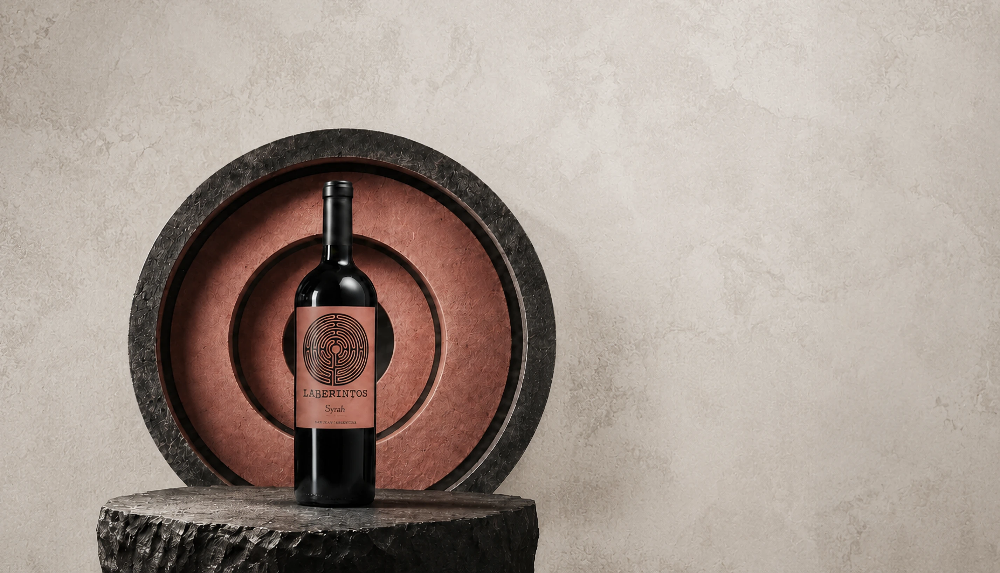
Varietal
Partida especial · 300 botellas
Ficha técnica parcial. Faltan los datos de vinificación, altitud y análisis.
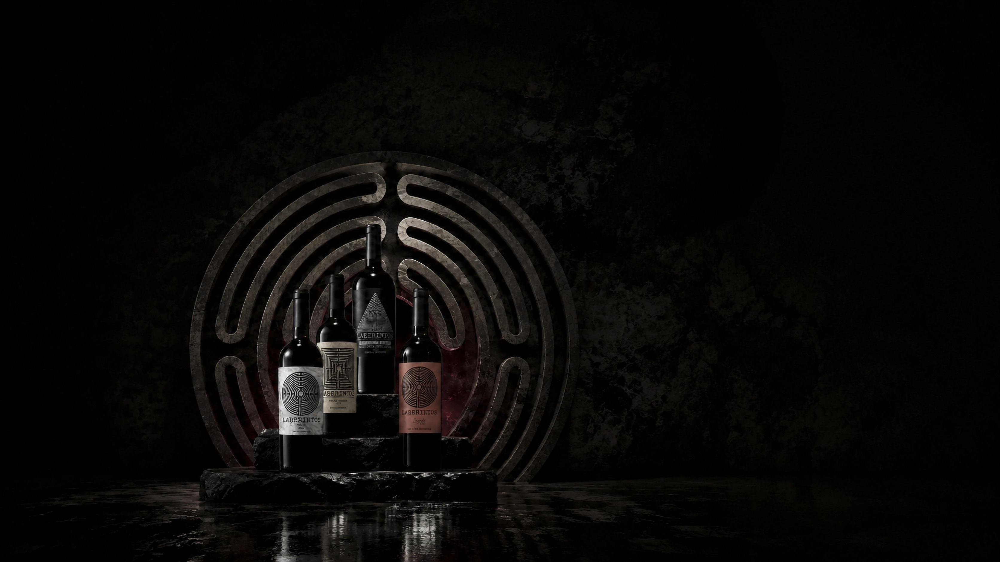